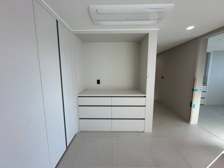
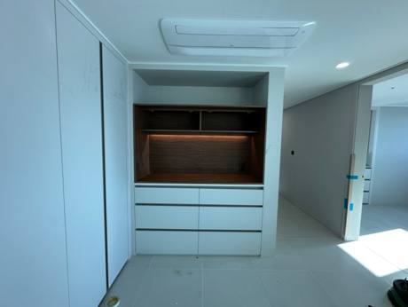

실제 현장
냉장고장 제작
작업 사례


냉장고장세종
칸막이 철거 후 수납장 만들기
두 대용 구조를 대형 냉장고 한 대 자리로 넓히고, 남는 폭은 수납장으로.
2026.10.12자세히 보기 →


냉장고장대전
칸막이·상부장 철거 후 구조 재정리
쓸 수 있는 부분은 남기고 상부장, 수납장, 슬라이드 밥솥장을 새로 제작.
2026.10.05자세히 보기 →


냉장고장신축 아파트
상부장 재사용 + 칸막이 제거
키친핏 냉장고가 안 들어가던 집. 상부장을 살려 비용을 아끼고 당일 사용.
2026.05.01자세히 보기 →


수납장대전 아파트 거실
나무 홈바 수납장 맞춤제작
하부장만 있던 거실 진열대에 우드 홈바장과 상부장을 더했어요.
2026.02.08자세히 보기 →


냉장고장대전 선화동 하늘채 스카이엔2차
냉장고장 중간 칸막이 제거
새 냉장고 자리가 애매하던 신축 세대에 자리를 만들었어요.
2025.11.10자세히 보기 →
냉장고장 제작 100만원부터, 칸막이 제거 리폼 30만원 (VAT 별도). 사진을 보고 우리 집 금액을 알려드려요. 사진 보내고 금액 받기 · 비용 자세히 보기